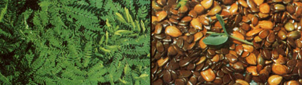

Filipino science writer Mario P. Chanco has news of a fast-growing"wonder tree" . . . which produces livestock feed, fertilizer, and large amounts of high-quality fuel wood. LEPILI: THE "TREE OF LIFE"
Three decades of careless lumbering have done extensive damage to the forests of the Philippine Islands. But public concern over the loss of this valuable resource, coupled with a recently introduced species of tree, now promises to go a long way toward restoring the scarred island hillsides.
The giant Lepili tree (Leucaena leucocephala) was brought to the Philippines from Hawaii less than 10 years ago. And-though local farmers have used the leaves and wood of a smaller variety of the tree (known as the "ipil ipil") for as long as they can remember-the new import has proved to be a very pleasant surprise.
It seems, you see, that the Lepili (which was supposedly cultivated by the Incas, Mayans, and Aztecs) is an exceptionally versatile plant. Its leaves can be used as a nitrogen-rich mulch which-it is reported-will stimulate corn into producing yields four or five times greater than those possible from unfertilized fields. The abundant Lepili foliage has a high enough protein content to make it a valuable livestock food,too.
But it's in the production of lumber, carving wood, and (perhaps most important of all) fuel that the Lepili really shines. Whereas most hardwoods grow relatively slowly, this Hawaiian giant puts on height and girth with a vengeance. Board lumber 8" wide, for example, can be cut from a six-year-old Lepili : . . and the trees reach a height of 19 feet in only three years!
J. Antonio Leviste-the ecology-conscious governor of Batangas province-is the man behind the Philippine Lepili program. Leviste was quick to realize what the tree could mean to his land and its people. He has, in effect, turned Batangas into a huge Lepili nursery by sparking a program that involves 30 million Filipino planters. The goal of this grass-roots reforestation plan is to plant 1 billion, 800 million new trees by 1982!
This restoration effort-if it even approaches its objective-will set an example for the rest of the world. And, since the Lepili yields between 200 and 300 cubic feet of wood per hectare (2.471 acres), those newly planted forests will provide the islands with a valuable stockpile of inexpensive (and renewable) fuel.
|
 |
|
|